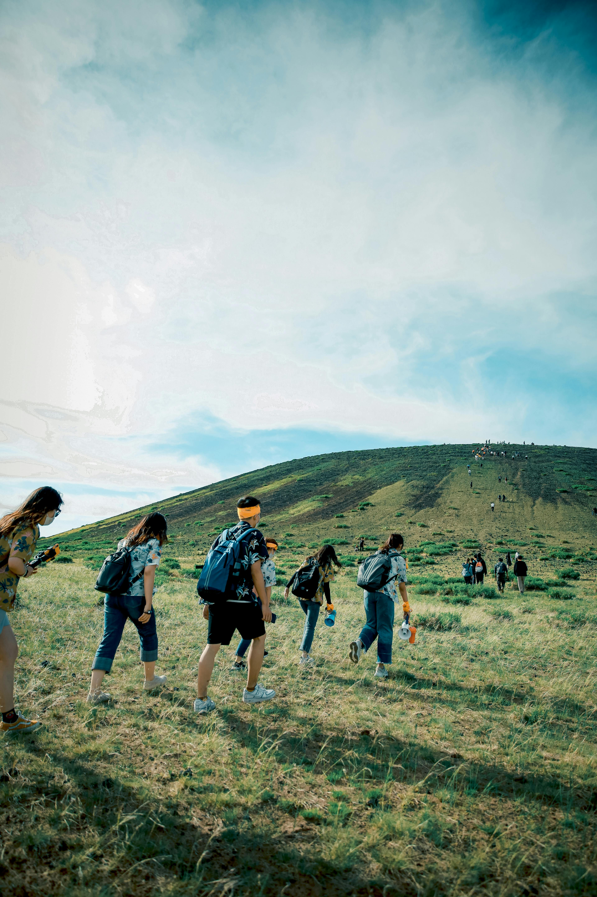

Sumate a una organización como voluntarie
¿Con cuál organización te identificás más?
Viandas en la Kennedy
Grupo independiente, que reparte viandas todos los viernes a las 19:30 hs en plaza Kenedy, en el partido de San Martín
Health Save Movement
Organización que promueve la salúd y la nutrición basada en plantas
Sitio webAmigues por las calles
Acercan alimentos de origen vegetal y donaciones de ropa a ciudadanes que sufren vulnerabilidad social

Difusión V
Red de activismo por la liberación animal, humana y de la Tierra
Sitio webMicrocentro Health Save
Activistas por los derechos animales y justicia socialü层úäüèª, reparten comida vegana en el teatro col√≥n
La Verdurolla
Orga de autoconvocades! Hacen viandas sin derivados animales para personas en situacioÃÅn de vulnerabilidad social

Voicot
Movimiento por la liberación animal y de la tierra. Hacen investagaciones en granjes y mataderos, difusiones y escritos
Sitio web

¿Quiénes Somos?
Sobre nosotres
Un grupo de gente apasionada con muchas ganas de ayudar. Creemos en la liberacion animal y en la justicia social. Nuestro objetivo es crear puentes entre personas con recursos y ganas de ayudar, con espacios que lo necesitan. Queremos despertar conciencia social y compromiso en la comunidad, buscando siempre el bienestar de quienes m√°s lo necesitan. Adem√°s, queremos ser el punto de referencia para aquellos que quieren involucrarse y para las organizaciones que necesitan apoyo, ofreciendo un servicio f√°cil y pr√°ctico.